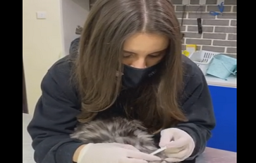

Building a calmer first clinic visit for nervous pets
How to shape the hours before arrival so your pet reaches the clinic already feeling safer.
Read more
Journal
The Petly journal turns clinical knowledge into practical guidance that feels warm, clear, and easy to act on.
Some pets do not fear medicine. They fear noise, unfamiliar handling, and uncertainty. A better first visit starts much earlier than the exam room.
Read Featured Article
How to shape the hours before arrival so your pet reaches the clinic already feeling safer.
Read more
Dryness, shedding, odor, and itching often point to patterns worth noticing before they escalate.
Read moreA simple rhythm for food, water, coat checks, and the subtle changes that deserve a closer look.
Read morePreparation, team rhythm, and environmental details that help Petly feel calmer by design.
Read more
Simple ways to involve children gently, honestly, and supportively during recovery at home.
Read more
How to spot the difference between a passing irritation and a pattern that needs a clinical plan.
Read moreStay connected to the Petly journal
The newsletter field in the footer is visual-only, but the design keeps the feeling of an editorial clinic brand alive throughout the site.
Contact the Clinic